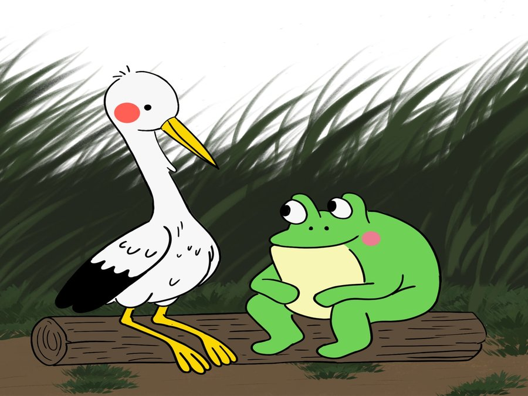
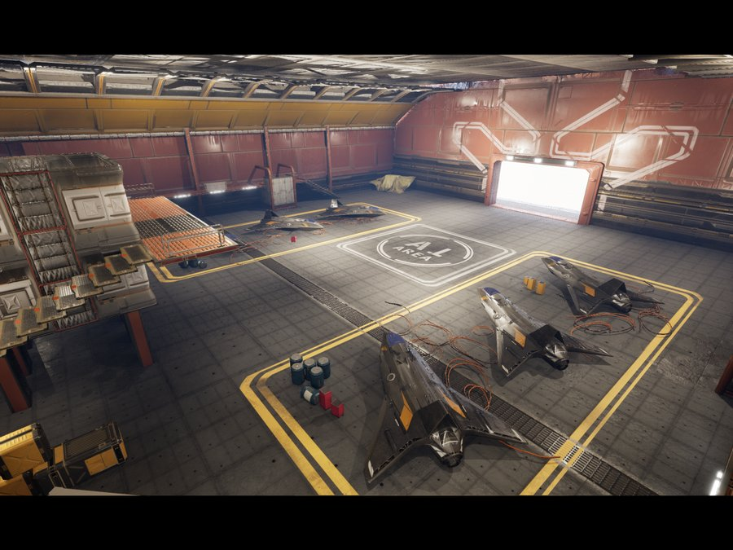
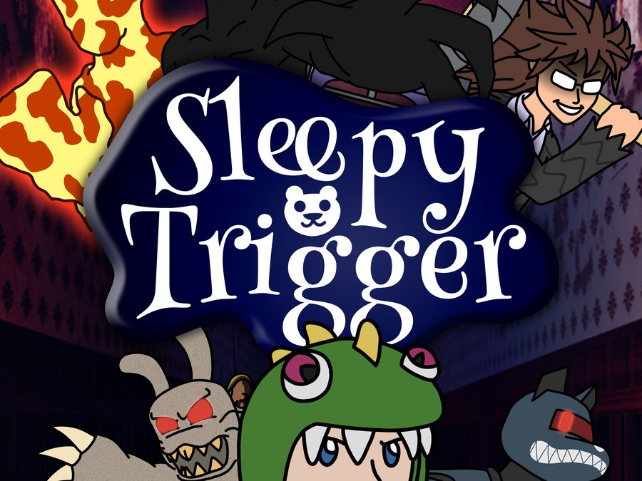

Gameplay Programmer · Selected Work
Ben Brown
Hi! I'm Benjamin Brown, a game programmer and designer. I graduated from Kent State University in 2025 with a degree in Game Design and Animation. I really enjoy taking a concept and giving it life. Below are some of the projects I've had the chance to build, from solo experiments to university team projects.
UE5·Unity·C++·Blueprint·9 Projects
ResumeProjects
Sonara
A rhythm game where the world performs the music with you. A glowing ball travels a branching path, landing on circles synced to the song while rocks, trees, and props react to the same beat. Currently grey box — systems before visuals.
Unreal Engine 5 · C++ / Blueprint
Trajectory-Driven Procedural Flight System
A flying carpet reconstructed from a shared trajectory instead of posed directly from player input — so its shape, the camera, and the VFX all stay synchronized by referencing the same movement data.
Unreal Engine 5.6 · Control Rig · Niagara
Physics-Based Pogo Controller Prototype
A spring-based pogo controller built solo in Unreal Engine 5. The physics simulation handles momentum and collision, while a custom impulse system keeps every bounce consistent and predictable instead of gradually losing energy.
Unreal Engine 5 (Blueprints)
Branch
A monkey swings branch to branch using pendulum physics instead of scripted animation. Same scope as PogoStick: one physical system, isolated and tuned until the swing reads as solid.
[Engine]

Feather and Leap
A 4-person co-op capstone about a stork and a frog restoring their corrupted swamp home. My contributions spanned art direction, 2D lighting, and gameplay code — including a custom water shader, rope physics, and a dynamic two-character camera system.
Unity (C#) · 4-person team

RaceStorm
A solo level design and character systems project built around a multiplayer FPS concept. The race and checkpoint logic was never wired up, but the level and a fully playable single-player FPS character, including movement, shooting, reloading, and sound, are built and working.
Unreal Engine · Solo Project

Sleepy Trigger
An 8-person university team project where a boy fights through his own dream to win back three stolen teddy animals. Built around a full game-state save system and hand-rolled boss AI with no State Tree or Behavior Tree.
Unreal Engine · 8-person team
Lost Idols
A lighting study, not a game — built to practice mood and readability through light alone. No gameplay is implied or attempted here.
[Engine]

Sunny By the Seaside
A lighting study rendered in Unreal with a custom-built HDRI, then finished as a multi-pass composite in Nuke — separate light passes, hand-rotoed vignette, depth defocus, and color correct.
Unreal Engine · Nuke